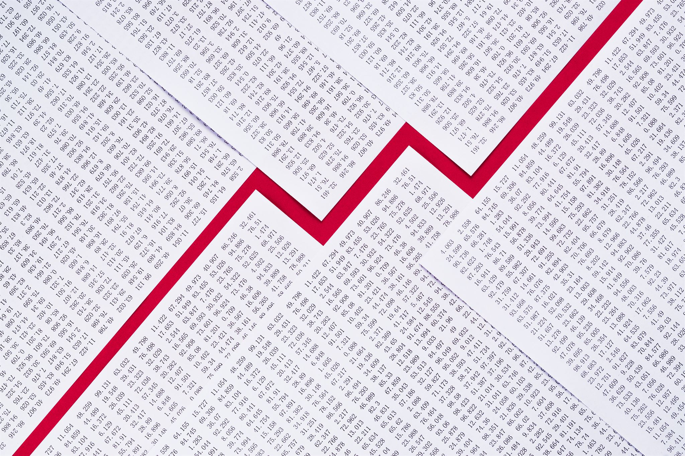
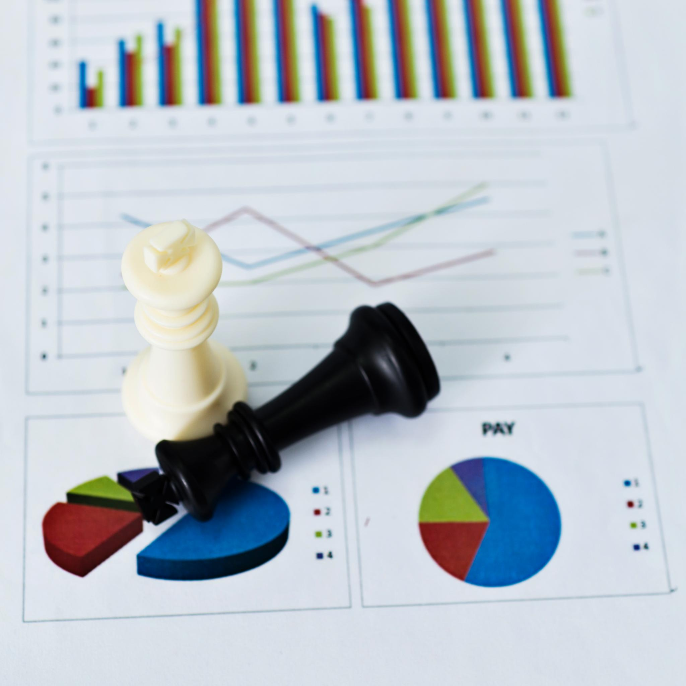
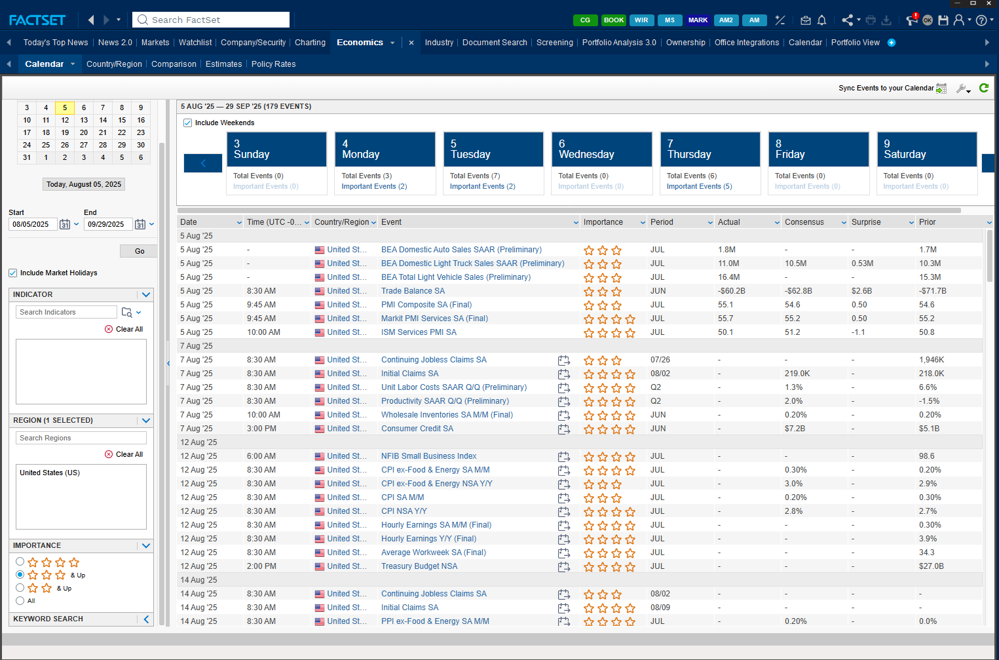
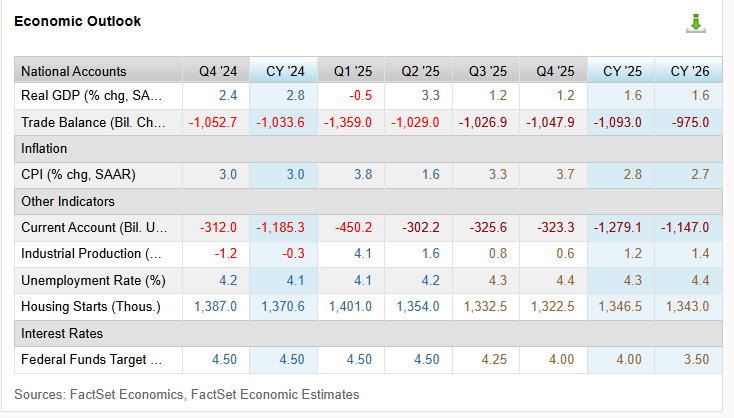
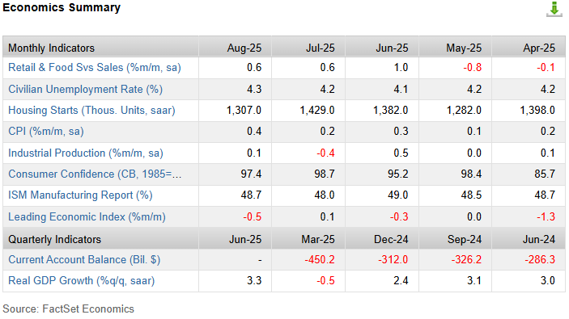
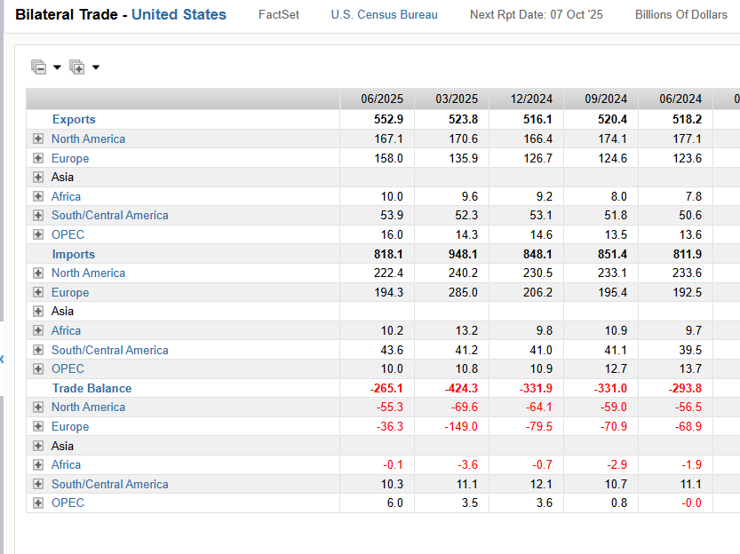
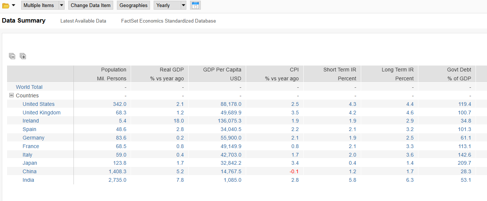
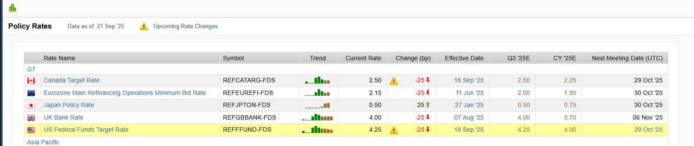
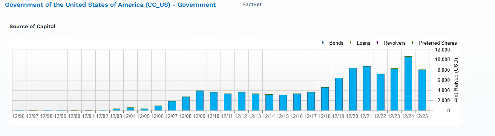
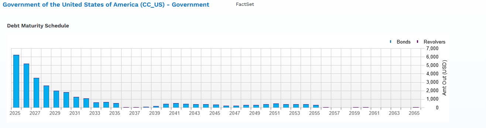

GDP and production measures show the pace and composition of growth.
Economic indicators and evidence
Understanding Economic Data and Its Role
How to source, interpret, and communicate country-level evidence in FactSet
Economic indicators and evidence
How to source, interpret, and communicate country-level evidence in FactSet
What economic data does
GDP and production measures show the pace and composition of growth.
Inflation data reveals changes in purchasing power and policy pressure.
Employment, wages, and participation show household and business conditions.
Trade and currency data show how the economy connects to the rest of the world.

Why markets react
An economic release matters because it changes expectations for growth, inflation, interest rates, and risk.
Beyond the trading screen
Forecast customer spending and changes in order volume.
Time investments and allocate resources as conditions change.
Stress-test supply, financing, and currency exposure.
Identify sectors and countries with stronger growth potential.

Project launch
What you will deliver
Executive summary: explain the current outlook, major strengths and vulnerabilities, and investment implications.
Data-visualization dashboard: organize the evidence into five connected categories.
In-class presentation: show what changed, why it matters, and what the evidence supports.
Five required categories
Growth, inflation, production, and external balances
Government finance, policy rates, and central-bank direction
Currency direction, volatility, and external competitiveness
Employment, wages, participation, and household conditions
Equity performance, interest rates, credit conditions, and banking-system signals
Questions that create a throughline
How has the country’s economic recovery progressed since COVID?
What are the primary drivers of the country’s current inflation trend?
How have the country’s financial markets performed over the last five years?
What additional finding changed or sharpened your view of the country?
What strong work demonstrates
Use the required indicators without turning the presentation into a data dump.
Identify direction, inflection points, and meaningful differences across time.
Connect claims to FactSet screens, source labels, or calculations.
Present a clear argument with professional visuals and purposeful sequencing.
Move from the event calendar to country, trade, policy, and government-finance views—then explain what the evidence means.
Start with timing and expectations

Historical FactSet interface captured in the 2025 source deck. Events and values shown are not current.
Country economic synopsis

Historical FactSet country and region view from the 2025 source deck.
Snapshot versus direction

Historical FactSet outlook view from the 2025 source deck.
Bilateral trade

Historical FactSet bilateral-trade view from the 2025 source deck.
World data summary

Historical standardized economic database view from the 2025 source deck. Use peers to establish context, not to replace country-specific analysis.
Policy rates

How restrictive or supportive is the current rate?
Has the central bank been hiking, cutting, or holding?
How might the stance affect bonds, currencies, banks, and demand?
Historical policy-rate view from the 2025 source deck.
Government source of capital

Which sources dominate government financing?
Is the mix becoming more concentrated or diversified?
What does the structure suggest about market access and sensitivity to rates?
Historical United States government capital view from the 2025 source deck.
Debt maturity schedule

Where are the largest maturity years?
Could maturing debt be refinanced at a higher cost?
How do growth, inflation, and policy rates change the interpretation?
Historical United States government debt-maturity view from the 2025 source deck.
Your analytical workflow
Define what you need to understand.
Choose the FactSet view that fits the question.
Describe the pattern across time or peers.
Connect related indicators and test the story.
State what the evidence means for markets or investment.
Use the left and right arrow keys to move between slides. Press F for fullscreen.